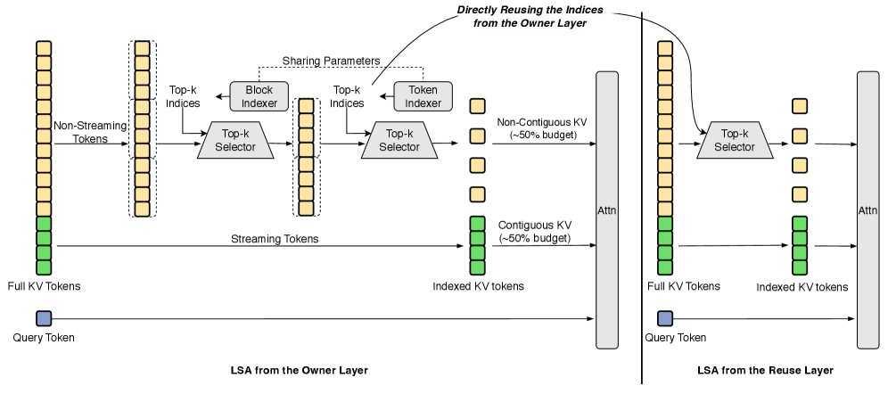
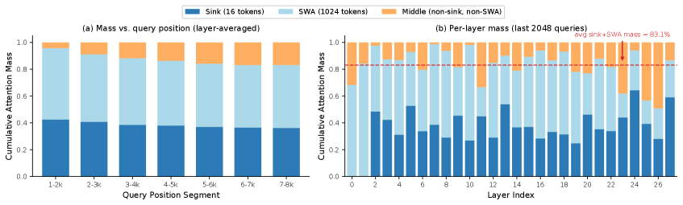
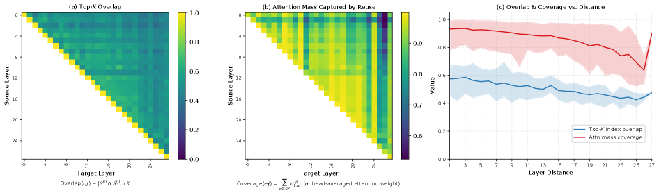
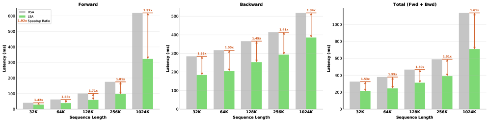
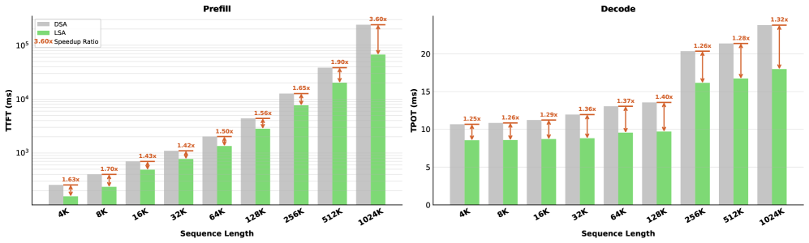
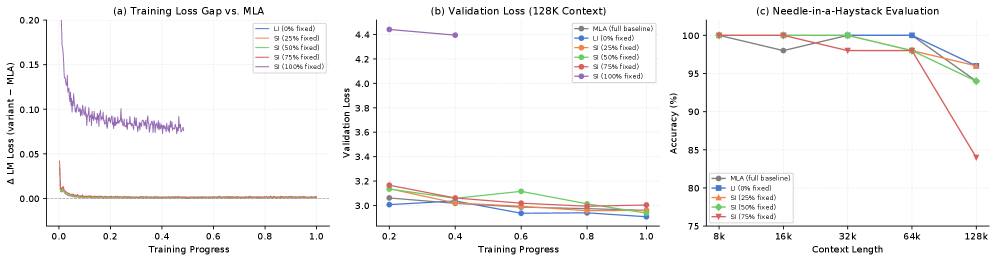
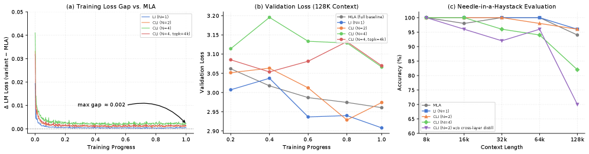
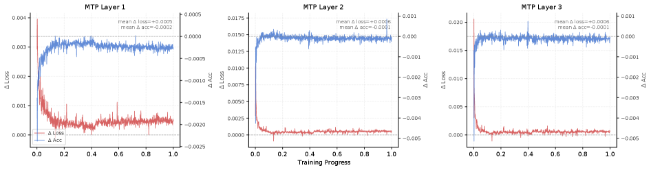
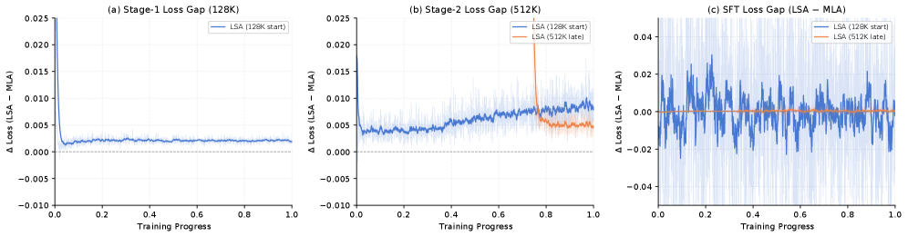

DeepSeek稀疏注意力（DSA）凭借其Lightning Indexer（闪电索引器）实现了高效的长上下文建模。但实际部署仍受两个系统级瓶颈制约：一是索引器昂贵的O(L²) 打分开销，二是其输出导致的低硬件效率、非连续的内存访问模式。
为此，论文提出LongCat Sparse Attention（LSA）：一个硬件-算法协同设计的框架，由三个互补且正交的策略构成：流感知索引（把分散的KV条目选择性转成硬件对齐的连续布局，实现合并的HBM访问）、跨层索引（复用单层的索引结果以摊销索引开销，配合跨层蒸馏）、以及分层索引（coarse-to-fine打分，逐步缩小每个查询的候选集，从而大幅降低索引计算）。
DSA用Lightning Indexer为每个查询挑出少量重要token，以稀疏注意力的方式让长上下文建模变得高效。但索引器本身有两种代价：打分要扫全序列（O(L²)），且选出的KV在内存里是分散、不连续的。
瓶颈一：非合并的内存访问。 token级稀疏选择迫使每次内存事务只读回一个不连续的KV向量，严重拉低高带宽内存（HBM）利用率。理想合并下，AI加速器单核可维持约50条在途cacheline（每条512B）；而DSA的非连续访问几乎无法利用这一点。

瓶颈二：打分开销随上下文膨胀。 上下文越长，索引器要做的打分越多。这两大系统级瓶颈，正是LSA用三个彼此正交、可自然叠加的模块去解决的靶点。
StreamingLLM发现一个关键规律：少量首部token（sink tokens）充当了注意力汇聚点，对稳定长上下文性能至关重要；同时存在少数的「流式头」（streaming heads），它们的注意力行为与其他头不同。
LSA的流感知索引利用这一点：对sink tokens和流式头部，总是给予高优先级、把它们的KV整理进硬件对齐的连续布局；其余候选再按稀疏打分挑选。

这样做的效果是把原来「东一个西一个」的非连续KV访问，变成硬件亲和的合并访问（coalesced access）：一次内存事务读回多个连续元素，显著提升HBM利用率，这正是解决非合并访问瓶颈的直接手段。
论文的分析发现：相邻层挑选出的Top-K token有很高的重叠度（Figure 3）：也就是说，逐层各自跑一遍索引器，很大程度是在重复劳动。
跨层索引据此把连续层划分成CLI组（组大小N）：只有组内第一层真正执行索引器，后续N-1层直接复用第一层产出的索引集。索引器调用的总次数从L层降为L/N层，索引开销被直接摊销掉。
但「朴素复用索引集」不做训练适配时会掉性能，所以论文引入跨层蒸馏（cross-layer distillation）：让被复用的那些层学会适应共享的索引，从而在不损失效果的前提下拿到减半甚至更省的索引计算。

与其对所有候选都做昂贵的精打分，LSA用两阶段coarse-to-fine打分：便宜的粗阶段先召回一小批候选子序列，把昂贵的精打分限制在缩小后的候选集上。
阶段一（块级粗过滤）：把序列切成大小为P的连续页，先做粗选择挑出Top-M页；对每页再切成B token的子块，预计算每块的粗评分，快速排除明显不相关的区域。
阶段二（细粒度精打分）：只在粗阶段留下的候选子集上做完整、高精度的打分。这样索引计算的规模大幅缩小，直接缓解DSA的O(L²) 打分开销，且粗选的高质量保证精打分几乎不丢召回。
规模从69B-A3B一直到560B-A27B的广泛实验显示：LSA在通用与长上下文基准上都持续达到与全注意力持平（on par）的性能，同时换来大幅的推理/训练加速（如降低TTFT与TPOT，Figure 5；单层注意力训练延迟也更低，Figure 4/10）。

三个消融（Figure 6/7/8）分别验证了每个模块的独立贡献：流感知索引、跨层索引、分层索引各自的收益都能被隔离出来，且MTP（多token预测）指标保持稳定，说明稀疏改造没损害预测质量。

LSA支持最长100万token的原生长上下文训练，并支撑了LongCat-2.0（1.6T-A48B）的开发；论文同时开源了整合LSA的LongCat-Flash-Lite-Sparse（69B-A3B）及更新后的长上下文训练语料。

总体而言，LSA证明了稀疏注意力可以不必牺牲性能：只要把「索引」本身做得又快又硬件友好。对想要普及长上下文、又受制于DSA系统开销的团队来说，这套三管齐下的方案提供了即插即用的优化思路。



参考：https://arxiv.org/html/2608.01662v1